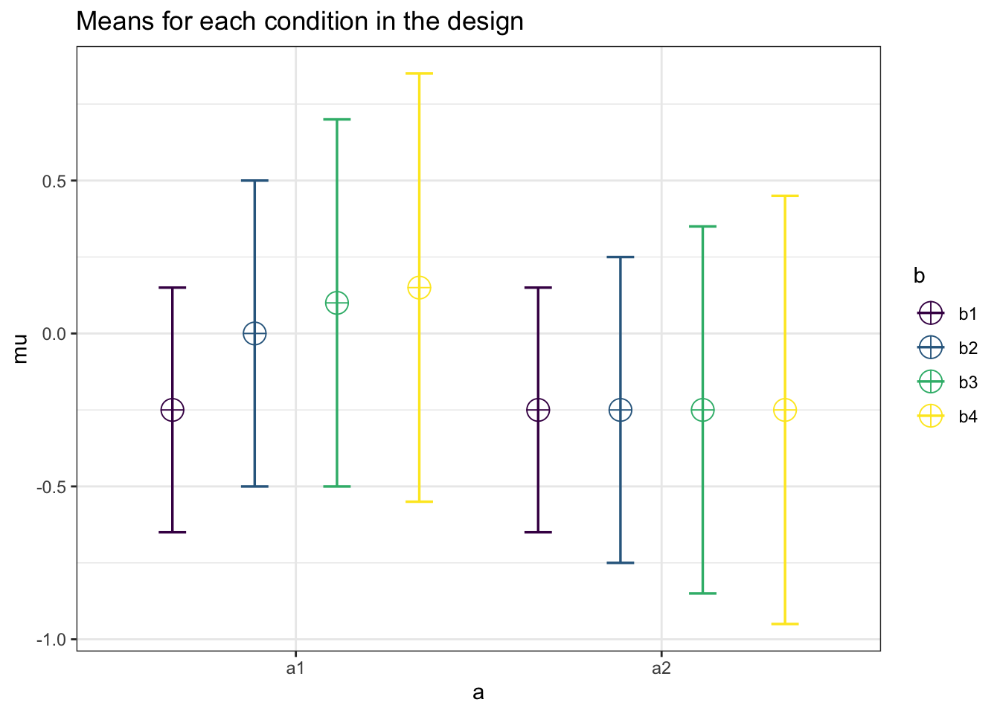

Appendix 1: Direct Comparison to pwr2ppl
In this appendix we have included the performance of Superpower to the pwr2ppl package using Chris Aberson’s examples in Applied Power Analysis for the Behavioral Sciences (2nd edition).
15.4 Examples from Chapter 5
15.4.1 Example 5.1/5.2
In this example, Aberson proposes a study expecting an average “score” of 80, 82, 82, and 86 for the control and three treatment groups respectively. The common standard deviation is 10 and the sample size per cell is 60.
design_result <- ANOVA_design(design = "4b",
n = 60,
sd = 10,
mu = c(80, 82, 82, 86),
labelnames = c("DORM",
"Control",
"T1",
"T2",
"T3"),
plot = TRUE)
Now we calculate the analytical result from Superpower.
analytical_result <- power_oneway_between(design_result)
analytical_result$power## [1] 81.21291The ANOVA_exact result.
exact_result <- ANOVA_exact(design_result, verbose = FALSE)
exact_result$main_results## power partial_eta_squared cohen_f non_centrality
## DORM 81.21291 0.04607922 0.2197842 11.4And these match pwr2ppl.
anova1f_4(m1 = 80, m2 = 82, m3 = 82, m4 = 86,
s1 = 10, s2 = 10, s3 = 10, s4 = 10,
n1 = 60, n2 = 60, n3 = 60, n4 = 60)## Power = 0.812 for eta-squared = 0.0515.4.2 Example 5.3
Now a 2 x 2 between-subject ANOVA.
design_result <- ANOVA_design(design = "2b*2b",
n = 100,
sd = 1.7,
mu = c(.85, .85,
0, .6),
plot = TRUE)
Now we calculate the analytical result from Superpower.
analytical_result <- power_twoway_between(design_result)
analytical_result$power_A## [1] 89.75072analytical_result$power_B## [1] 42.10204analytical_result$power_AB## [1] 42.10204The ANOVA_exact result.
exact_result <- ANOVA_exact(design_result, verbose = FALSE)
exact_result$main_results## power partial_eta_squared cohen_f non_centrality
## a 89.75072 0.025751475 0.16257965 10.467128
## b 42.10204 0.007802747 0.08867981 3.114187
## a:b 42.10204 0.007802747 0.08867981 3.114187And these match pwr2ppl. From Table 5.12.
anova2x2(m1.1 = 0.85, m1.2 = 0.85, m2.1 = 0.00, m2.2 = 0.60,
s1.1 = 1.7, s1.2 = 1.7, s2.1 = 1.7, s2.2 = 1.7,
n1.1 = 100, n1.2 = 100, n2.1 = 100, n2.2 = 100,
alpha = .05)## Power for Main Effect Factor A = 0.898## Power for Main Effect Factor B = 0.421## Power for Interaction AxB = 0.421Now we can increase the sample size to 250 per cell
design_result <- ANOVA_design(design = "2b*2b",
n = 250,
sd = 1.7,
mu = c(.85, .85,
0, .6),
plot = TRUE)
Now we calculate the analytical result from Superpower.
analytical_result <- power_twoway_between(design_result)
analytical_result$power_A## [1] 99.91852analytical_result$power_B## [1] 79.60496analytical_result$power_AB## [1] 79.60496The ANOVA_exact result.
exact_result <- ANOVA_exact(design_result, verbose = FALSE)
exact_result$main_results## power partial_eta_squared cohen_f non_centrality
## a 99.91852 0.025600317 0.1620892 26.167820
## b 79.60496 0.007756107 0.0884123 7.785467
## a:b 79.60496 0.007756107 0.0884123 7.785467And these match pwr2ppl.
anova2x2(m1.1 = 0.85, m1.2 = 0.85, m2.1 = 0.00, m2.2 = 0.60,
s1.1 = 1.7, s1.2 = 1.7, s2.1 = 1.7, s2.2 = 1.7,
n1.1 = 250, n1.2 = 250, n2.1 = 250, n2.2 = 250,
alpha = .05)## Power for Main Effect Factor A = 0.999## Power for Main Effect Factor B = 0.796## Power for Interaction AxB = 0.79615.5 Examples from Chapter 6
Repeated measures ANOVAs
15.5.1 Example from Table 6.2
design_result <- ANOVA_design(design = "4w",
n = 25,
sd = c(.4,.5,.6,.7),
mu = c(-.25, .00, .10, .15),
r = c(.50,
.30,
.15,
.5,
.30,
.50),
plot = TRUE)design_result$cor_mat## a1 a2 a3 a4
## a1 1.00 0.5 0.3 0.15
## a2 0.50 1.0 0.5 0.30
## a3 0.30 0.5 1.0 0.50
## a4 0.15 0.3 0.5 1.00There is no analytical result from Superpower when the correlations vary.
Now we prouce 3 ANOVA_exact results representing no sphericity correction, Greenhouse-Geisser, and Huynh-Feldt corrected results.
exact_result <- ANOVA_exact(design_result, verbose = FALSE)
exact_result$main_results## power partial_eta_squared cohen_f non_centrality
## a 80.94999 0.1404744 0.4042678 11.76713exact_result <- ANOVA_exact(design_result,
correction = "GG",
verbose = FALSE)
exact_result$main_results## power partial_eta_squared cohen_f non_centrality
## a 74.45876 0.1404744 0.4042678 9.585214exact_result <- ANOVA_exact(design_result,
correction = "HF",
verbose = FALSE)
exact_result$main_results## power partial_eta_squared cohen_f non_centrality
## a 78.14498 0.1404744 0.4042678 10.75258And these match pwr2ppl.
win1F(m1 = -.25, m2 = .00, m3 = .10, m4 = .15,
s1 = .4, s2 = .5, s3 = .6, s4 = .7,
r12 = .50, r13 = .30,
r14 = .15, r23 = .5,
r24 = .30, r34 = .50,
n = 25)## partial eta-squared = 0.14## Power (Unadjusted) for n = 25 is 0.809## Power H-F Adjusted (Epsilon = 0.914) for n = 25 is 0.782## Power G-G Adjusted (Epsilon = 0.815) for n = 25 is 0.74515.5.2 Example from Table 6.6
design_result <- ANOVA_design(design = "4w",
n = 100,
sd = c(.4,.5,2.5,2),
mu = c(-.25, .00, .10, .15),
r = c(.50,
.30,
.1,
.5,
.30,
.40),
plot = TRUE)
design_result$cor_mat## a1 a2 a3 a4
## a1 1.0 0.5 0.3 0.1
## a2 0.5 1.0 0.5 0.3
## a3 0.3 0.5 1.0 0.4
## a4 0.1 0.3 0.4 1.0There is no analytical result from Superpower when the correlations vary.
Now we prouce 3 ANOVA_exact results representing no sphericity correction, Greenhouse-Geisser, and Huynh-Feldt corrected results.
exact_result <- ANOVA_exact(design_result, verbose = FALSE)
exact_result$main_results## power partial_eta_squared cohen_f non_centrality
## a 39.74802 0.01502077 0.1234902 4.529201exact_result <- ANOVA_exact(design_result,
correction = "GG",
verbose = FALSE)
exact_result$main_results## power partial_eta_squared cohen_f non_centrality
## a 31.78652 0.01502077 0.1234902 2.997994exact_result <- ANOVA_exact(design_result,
correction = "HF",
verbose = FALSE)
exact_result$main_results## power partial_eta_squared cohen_f non_centrality
## a 32.12295 0.01502077 0.1234902 3.059139And these match pwr2ppl.
win1F(m1 = -.25, m2 = .00, m3 = .10, m4 = .15,
s1 = .4, s2 = .5, s3 = 2.5, s4 = 2.0,
r12 = .50, r13 = .30, r14 = .10,
r23 = .5, r24 = .30, r34 = .40,
n = 100)## partial eta-squared = 0.015## Power (Unadjusted) for n = 100 is 0.397## Power H-F Adjusted (Epsilon = 0.675) for n = 100 is 0.321## Power G-G Adjusted (Epsilon = 0.662) for n = 100 is 0.31815.5.3 Example from Table 6.8
design_result <- ANOVA_design(design = "2w*4w",
n = 80,
sd = c(.4,0.5,
2.5,2.0,
0.4,0.5,
2.5,2.0),
mu = c(-0.25,0.0,
0.10,0.15,
-0.25,0.10,
0.30,0.35),
r = c(.5),
plot = TRUE)
design_result$cor_mat## a1_b1 a1_b2 a1_b3 a1_b4 a2_b1 a2_b2 a2_b3 a2_b4
## a1_b1 1.0 0.5 0.5 0.5 0.5 0.5 0.5 0.5
## a1_b2 0.5 1.0 0.5 0.5 0.5 0.5 0.5 0.5
## a1_b3 0.5 0.5 1.0 0.5 0.5 0.5 0.5 0.5
## a1_b4 0.5 0.5 0.5 1.0 0.5 0.5 0.5 0.5
## a2_b1 0.5 0.5 0.5 0.5 1.0 0.5 0.5 0.5
## a2_b2 0.5 0.5 0.5 0.5 0.5 1.0 0.5 0.5
## a2_b3 0.5 0.5 0.5 0.5 0.5 0.5 1.0 0.5
## a2_b4 0.5 0.5 0.5 0.5 0.5 0.5 0.5 1.0There is no analytical result from Superpower for two-way within subjects designs.
Now we prouce 3 ANOVA_exact results representing no sphericity correction, Greenhouse-Geisser, and Huynh-Feldt corrected results.
#In comparision to pwr2ppl the main effects are "flipped"
# e.g. Superpower a = pwr2ppl "B"
exact_result <- ANOVA_exact(design_result, verbose = FALSE)
exact_result$main_results## power partial_eta_squared cohen_f non_centrality
## a 27.24340 0.023198088 0.15410717 1.8761726
## b 74.84647 0.040077020 0.20432877 9.8948083
## a:b 10.23225 0.003471099 0.05901855 0.8255159exact_result <- ANOVA_exact(design_result,
correction = "GG",
verbose = FALSE)
exact_result$main_results## power partial_eta_squared cohen_f non_centrality
## a 27.243403 0.023198088 0.15410717 1.8761726
## b 58.540772 0.040077020 0.20432877 5.9072378
## a:b 9.130272 0.003471099 0.05901855 0.5072161exact_result <- ANOVA_exact(design_result,
correction = "HF",
verbose = FALSE)
exact_result$main_results## power partial_eta_squared cohen_f non_centrality
## a 27.243403 0.023198088 0.15410717 1.8761726
## b 59.182337 0.040077020 0.20432877 6.0353398
## a:b 9.174188 0.003471099 0.05901855 0.5187745And these match pwr2ppl.
win2F(m1.1 = -.25, m2.1 = 0,
m3.1 = .10, m4.1 = .15,
m1.2 = -.25, m2.2 = .10,
m3.2 = .30, m4.2 = .35,
s1.1 = .4, s2.1 = .5,
s3.1 = 2.5, s4.1 = 2.0,
s1.2 = .4, s2.2 = .5,
s3.2 = 2.5, s4.2 = 2.0,
r = .5, n = 80)## Partial eta-squared Factor A = 0.04## Power Factor A (Unadjusted) for n = 80 is 0.748## Power Factor A H-F Adjusted (Epsilon = 0.61) for n = 80 is 0.592## Power Factor A G-G Adjusted (Epsilon = 0.597) for n = 80 is 0.585## Partial eta-squared Factor B = 0.023## Power Factor B (Unadjusted) for n = 80 is 0.272## Power Factor B Adjusted - There is no adjustment when levels = 2## Partial eta-squared AxB = 0.003## Power AxB (Unadjusted) for n = 80 is 0.102## Power AxB H-F Adjusted (Epsilon = 0.628) for n = 80 is 0.092## Power AxB G-G Adjusted (Epsilon = 0.614) for n = 80 is 0.09115.6 Example from Chapter 7
Mixed effect ANOVA
15.6.1 From Table 7.2
In this case we must write out an entire correlation matrix. This means the diagonal element is equal to 1 and the off-diagonal elements corresponding to between-subjects factors are equal to zero.
design_result <- ANOVA_design("2b*4w",
n = 50,
sd = c(.4, .5, 0.6, .7,
.4, .5, .6, .7),
r = c(1.0,0.5,0.3,0.15,0.0,0.0,0.0,0.0,
0.5,1.0,0.5,0.3,0.0,0.0,0.0,0.0,
0.3,0.5,1.0,0.5,0.0,0.0,0.0,0.0,
0.15,0.3,0.5,1.0,0.0,0.0,0.0,0.0,
0.0,0.0,0.0,0.0,1.0,0.5,0.3,0.15,
0.0,0.0,0.0,0.0,0.5,1.0,0.5,0.3,
0.0,0.0,0.0,0.0,0.3,0.5,1.0,0.5,
0.0,0.0,0.0,0.0,0.15,0.3,0.5,1.0),
mu = c(-.25, 0.0, 0.10, 0.15,
-.25,-.25,-.25,-.25))
design_result$cor_mat## a1_b1 a1_b2 a1_b3 a1_b4 a2_b1 a2_b2 a2_b3 a2_b4
## a1_b1 1.00 0.5 0.3 0.15 0.00 0.0 0.0 0.00
## a1_b2 0.50 1.0 0.5 0.30 0.00 0.0 0.0 0.00
## a1_b3 0.30 0.5 1.0 0.50 0.00 0.0 0.0 0.00
## a1_b4 0.15 0.3 0.5 1.00 0.00 0.0 0.0 0.00
## a2_b1 0.00 0.0 0.0 0.00 1.00 0.5 0.3 0.15
## a2_b2 0.00 0.0 0.0 0.00 0.50 1.0 0.5 0.30
## a2_b3 0.00 0.0 0.0 0.00 0.30 0.5 1.0 0.50
## a2_b4 0.00 0.0 0.0 0.00 0.15 0.3 0.5 1.00Now the results from ANOVA_exact.
exact_result <- ANOVA_exact(design_result,
correction = "none",
verbose = FALSE)
exact_result$main_results## power partial_eta_squared cohen_f non_centrality
## a 86.42918 0.08878976 0.3121563 9.549274
## b 82.68405 0.03848397 0.2000607 11.767135
## a:b 82.68405 0.03848397 0.2000607 11.767135exact_result <- ANOVA_exact(design_result,
correction = "GG",
verbose = FALSE)
exact_result$main_results## power partial_eta_squared cohen_f non_centrality
## a 86.42918 0.08878976 0.3121563 9.549274
## b 76.47495 0.03848397 0.2000607 9.585214
## a:b 76.47495 0.03848397 0.2000607 9.585214exact_result <- ANOVA_exact(design_result,
correction = "HF",
verbose = FALSE)
exact_result$main_results## power partial_eta_squared cohen_f non_centrality
## a 86.42918 0.08878976 0.3121563 9.549274
## b 77.31933 0.03848397 0.2000607 9.848557
## a:b 77.31933 0.03848397 0.2000607 9.848557And the results from pwr2ppl.
win1bg1(m1.1 = -.25, m2.1 = 0, m3.1 = 0.10, m4.1 = .15,
m1.2 = -.25, m2.2 = -.25, m3.2 = -.25, m4.2 = -.25,
s1.1 = .4, s2.1 = .5, s3.1 = 0.6, s4.1 = .7, s1.2 = .4,
s2.2 = .5, s3.2 = .6, s4.2 = .7,
n = 50,
r1.2_1 = .5, r1.3_1 = .3, r1.4_1 = .15,
r2.3_1 = .5, r2.4_1 = .3, r3.4_1 = .5,
r1.2_2 = .5, r1.3_2 = .3, r1.4_2 = .15,
r2.3_2 = .5, r2.4_2 = .3, r3.4_2 = .5)## Partial eta-squared Factor A = 0.089## Power Factor A (Between) for n = 50 is 0.864## Partial eta-squared Factor B = 0.038## Power Factor B (Within) for n = 50 is 0.827## Power Factor B H-F Adjusted (Epsilon = 0.837), for n = 50 is 0.773## Power Factor B G-G Adjusted (Epsilon = 0.815) for n = 50 is 0.765## Partial eta-squared Factor AxB = 0.089## Power AxB (Unadjusted) for n = 50 is 0.827## Power AxB H-F Adjusted (Epsilon = 0.837) for n = 50 is 0.761## Power AxB G-G Adjusted (Epsilon = 0.815) for n = 50 is 0.765